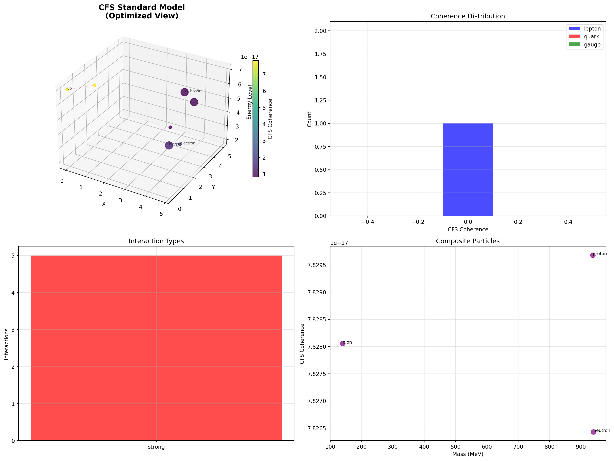

Code
import numpy as np
import matplotlib.pyplot as plt
from mpl_toolkits.mplot3d import Axes3D
from matplotlib.widgets import Slider, Button
from matplotlib.colors import Normalize
import networkx as nx
from scipy.optimize import minimize
import warnings
warnings.filterwarnings('ignore')
class CFSStandardModelSimulator:
def __init__(self):
# Physical constants
self.phi = (1 + np.sqrt(5)) / 2 # Golden ratio
self.alpha_em = 1/137 # Fine structure constant
self.alpha_s = 0.1 # Strong coupling
self.alpha_w = 0.03 # Weak coupling
# CFS parameters
self.D_base = 1e-12 # Base diffusion coefficient
self.T_base = 1e-23 # Planck time scale
self.coherence_threshold = 0.1
# Performance caches
self._coherence_cache = {}
self._signature_cache = {}
self._phi_powers_cache = {}
# Standard Model particles
self.particles = self.setup_standard_model_particles()
self.interactions = self.setup_interaction_rules()
# Pre-calculate expensive operations
self._precompute_phi_powers()
self._precompute_particle_properties()
def _precompute_phi_powers(self):
"""Pre-calculate phi powers for all particle levels"""
max_level = max(p['n_level'] for p in self.particles.values())
for n in range(max_level + 1):
self._phi_powers_cache[n] = self.phi**n
self._phi_powers_cache[n/2] = self.phi**(n/2)
def _precompute_particle_properties(self):
"""Pre-calculate particle-specific properties"""
self._particle_D_eff = {}
self._particle_T_eff = {}
for name, particle in self.particles.items():
# Mass-dependent diffusion coefficient
self._particle_D_eff[name] = self.D_base / (1 + particle['mass'] / 1000)
# Time scaling with particle lifetime
n = particle['n_level']
self._particle_T_eff[name] = self.T_base * (n + 1) * self._phi_powers_cache[n/2]
def setup_standard_model_particles(self):
"""Define Standard Model particles as CFS excitations"""
particles = {
# Quarks (high-energy CFS excitations)
'up': {'type': 'quark', 'charge': 2/3, 'mass': 2.3, 'n_level': 4, 'color': 'red'},
'down': {'type': 'quark', 'charge': -1/3, 'mass': 4.8, 'n_level': 4, 'color': 'green'},
'charm': {'type': 'quark', 'charge': 2/3, 'mass': 1275, 'n_level': 5, 'color': 'blue'},
'strange': {'type': 'quark', 'charge': -1/3, 'mass': 95, 'n_level': 5, 'color': 'cyan'},
'top': {'type': 'quark', 'charge': 2/3, 'mass': 173000, 'n_level': 6, 'color': 'magenta'},
'bottom': {'type': 'quark', 'charge': -1/3, 'mass': 4180, 'n_level': 6, 'color': 'yellow'},
# Leptons (medium-energy excitations)
'electron': {'type': 'lepton', 'charge': -1, 'mass': 0.511, 'n_level': 2, 'color': 'orange'},
'muon': {'type': 'lepton', 'charge': -1, 'mass': 105.7, 'n_level': 3, 'color': 'purple'},
'tau': {'type': 'lepton', 'charge': -1, 'mass': 1777, 'n_level': 4, 'color': 'brown'},
'electron_neutrino': {'type': 'neutrino', 'charge': 0, 'mass': 0.001, 'n_level': 1, 'color': 'lightblue'},
'muon_neutrino': {'type': 'neutrino', 'charge': 0, 'mass': 0.001, 'n_level': 2, 'color': 'lightgreen'},
'tau_neutrino': {'type': 'neutrino', 'charge': 0, 'mass': 0.001, 'n_level': 3, 'color': 'pink'},
# Gauge bosons (force mediators)
'photon': {'type': 'gauge', 'charge': 0, 'mass': 0, 'n_level': 1, 'color': 'gold'},
'W_boson': {'type': 'gauge', 'charge': 1, 'mass': 80379, 'n_level': 4, 'color': 'red'},
'Z_boson': {'type': 'gauge', 'charge': 0, 'mass': 91188, 'n_level': 4, 'color': 'blue'},
'gluon': {'type': 'gauge', 'charge': 0, 'mass': 0, 'n_level': 3, 'color': 'green'},
# Higgs
'higgs': {'type': 'scalar', 'charge': 0, 'mass': 125100, 'n_level': 5, 'color': 'silver'}
}
return particles
def setup_interaction_rules(self):
"""Define allowed interactions based on CFS signature matching"""
interactions = {
'electromagnetic': {
'coupling': self.alpha_em,
'mediator': 'photon',
'rule': lambda p1, p2: p1['charge'] != 0 or p2['charge'] != 0
},
'weak': {
'coupling': self.alpha_w,
'mediator': ['W_boson', 'Z_boson'],
'rule': lambda p1, p2: True # Universal weak interaction
},
'strong': {
'coupling': self.alpha_s,
'mediator': 'gluon',
'rule': lambda p1, p2: p1['type'] == 'quark' and p2['type'] == 'quark'
}
}
return interactions
def cfs_particle_coherence(self, particle_name, t=0, external_field=0):
"""Calculate CFS coherence for a particle with caching"""
# Check cache first
cache_key = (particle_name, t, external_field)
if cache_key in self._coherence_cache:
return self._coherence_cache[cache_key]
particle = self.particles[particle_name]
n = particle['n_level']
# Use pre-computed values
D_eff = self._particle_D_eff[particle_name]
T_eff = self._particle_T_eff[particle_name]
# Core CFS scaling: λ = φⁿ√(DT) - use cached phi power
lambda_coherence = self._phi_powers_cache[n] * np.sqrt(D_eff * T_eff)
# External field effects
field_enhancement = 1 + external_field * particle['charge']
# Time evolution
coherence = lambda_coherence * field_enhancement * np.exp(-0.001 * t)
# Cache the result
self._coherence_cache[cache_key] = coherence
return coherence
def signature_matching(self, particle1, particle2):
"""Calculate signature matching between particles for interactions with caching"""
# Check cache first (use sorted tuple for consistency)
cache_key = tuple(sorted([particle1, particle2]))
if cache_key in self._signature_cache:
return self._signature_cache[cache_key]
p1 = self.particles[particle1]
p2 = self.particles[particle2]
# Charge compatibility
charge_match = 1 / (1 + abs(p1['charge'] - p2['charge']))
# Mass ratio compatibility (golden ratio preference)
mass_ratio = max(p1['mass'], p2['mass']) / (min(p1['mass'], p2['mass']) + 1e-6)
mass_match = 1 / (1 + abs(mass_ratio - self.phi))
# Energy level resonance
n_diff = abs(p1['n_level'] - p2['n_level'])
level_match = np.exp(-n_diff / 2)
result = charge_match * mass_match * level_match
# Cache the result
self._signature_cache[cache_key] = result
return result
def calculate_particle_interactions(self, fast_mode=True):
"""Calculate all possible particle interactions - ultra-optimized version"""
interactions = []
particle_names = list(self.particles.keys())
# Fast mode: only calculate strongest interactions
if fast_mode:
# Pre-filter particles by type for targeted interactions
quarks = [name for name, p in self.particles.items() if p['type'] == 'quark']
leptons = [name for name, p in self.particles.items() if p['type'] == 'lepton']
gauge_bosons = [name for name, p in self.particles.items() if p['type'] == 'gauge']
# Only calculate key interactions that matter for visualization
key_pairs = []
# Strong interactions: quark-quark (most important)
for i in range(len(quarks)):
for j in range(i+1, min(i+3, len(quarks))): # Limit to nearest neighbors
key_pairs.append((quarks[i], quarks[j], 'strong'))
# EM interactions: charged particles with photon
for particle_name in particle_names:
if self.particles[particle_name]['charge'] != 0:
key_pairs.append((particle_name, 'photon', 'electromagnetic'))
# Weak interactions: leptons with W/Z bosons (sample)
for lepton in leptons[:3]: # Only first 3 leptons
key_pairs.append((lepton, 'W_boson', 'weak'))
# Calculate only key interactions
for p1_name, p2_name, int_type in key_pairs:
if p1_name in self.particles and p2_name in self.particles:
p1 = self.particles[p1_name]
p2 = self.particles[p2_name]
if self.interactions[int_type]['rule'](p1, p2):
signature = self.signature_matching(p1_name, p2_name)
coupling = self.interactions[int_type]['coupling']
interaction_strength = signature * coupling
if interaction_strength > 0.001:
interactions.append({
'particle1': p1_name,
'particle2': p2_name,
'type': int_type,
'strength': interaction_strength,
'signature_match': signature,
'mediator': self.interactions[int_type]['mediator']
})
else:
# Original full calculation
for i, p1_name in enumerate(particle_names):
for j, p2_name in enumerate(particle_names[i+1:], i+1):
p1 = self.particles[p1_name]
p2 = self.particles[p2_name]
for int_type, int_data in self.interactions.items():
if int_data['rule'](p1, p2):
signature = self.signature_matching(p1_name, p2_name)
coupling = int_data['coupling']
interaction_strength = signature * coupling
if interaction_strength > 0.001:
interactions.append({
'particle1': p1_name,
'particle2': p2_name,
'type': int_type,
'strength': interaction_strength,
'signature_match': signature,
'mediator': int_data['mediator']
})
return interactions
def generate_composite_particles(self, simplified=True):
"""Generate composite particles (hadrons) from quark combinations"""
composites = {}
if simplified:
# Only generate the most important composites for visualization
essential_composites = ['proton', 'neutron', 'pion']
else:
essential_composites = ['proton', 'neutron', 'pion', 'kaon', 'lambda']
# Proton: uud
if 'proton' in essential_composites and all(q in self.particles for q in ['up', 'down']):
proton_coherence = (2 * self.cfs_particle_coherence('up') +
self.cfs_particle_coherence('down')) / 3
composites['proton'] = {
'constituents': ['up', 'up', 'down'],
'charge': 1,
'mass': 938.3,
'coherence': proton_coherence,
'type': 'baryon'
}
# Neutron: udd
if 'neutron' in essential_composites and all(q in self.particles for q in ['up', 'down']):
neutron_coherence = (self.cfs_particle_coherence('up') +
2 * self.cfs_particle_coherence('down')) / 3
composites['neutron'] = {
'constituents': ['up', 'down', 'down'],
'charge': 0,
'mass': 939.6,
'coherence': neutron_coherence,
'type': 'baryon'
}
# Pion: ud̄ (simplified)
if 'pion' in essential_composites and all(q in self.particles for q in ['up', 'down']):
pion_coherence = (self.cfs_particle_coherence('up') +
self.cfs_particle_coherence('down')) / 2
composites['pion'] = {
'constituents': ['up', 'down'],
'charge': 0,
'mass': 139.6,
'coherence': pion_coherence,
'type': 'meson'
}
return composites
def simulate_molecular_formation(self):
"""Simulate how atoms combine to form molecules through CFS interactions"""
molecules = {}
# Get composite particles
composites = self.generate_composite_particles()
if 'proton' in composites:
# Hydrogen atom formation
hydrogen_coherence = (composites['proton']['coherence'] +
self.cfs_particle_coherence('electron'))
molecules['hydrogen'] = {
'constituents': ['proton', 'electron'],
'coherence': hydrogen_coherence,
'binding_energy': 13.6, # eV
'type': 'atom'
}
# Hydrogen molecule (H2)
if hydrogen_coherence > self.coherence_threshold:
h2_coherence = 2 * hydrogen_coherence * self.phi # Golden ratio enhancement
molecules['H2'] = {
'constituents': ['hydrogen', 'hydrogen'],
'coherence': h2_coherence,
'binding_energy': 4.5, # eV
'type': 'molecule'
}
return molecules
def create_comprehensive_visualization(self, fast_mode=True):
"""Create complete Standard Model visualization - ultra-optimized version"""
if fast_mode:
print("Running in FAST MODE - optimized for quick visualization...")
else:
print("Running in FULL MODE - complete calculations...")
print("Calculating particle properties...")
# Calculate particle properties - use cached coherences
particle_coherences = {name: self.cfs_particle_coherence(name)
for name in self.particles.keys()}
print("Calculating interactions...")
interactions = self.calculate_particle_interactions(fast_mode=fast_mode)
print("Generating composites...")
composites = self.generate_composite_particles(simplified=fast_mode)
print("Simulating molecular formation...")
molecules = self.simulate_molecular_formation()
print("Creating visualization...")
# Setup figure with optimized subplot layout
fig = plt.figure(figsize=(16, 12)) # Slightly smaller for faster rendering
# Simplified layout for fast mode
if fast_mode:
ax_main = fig.add_subplot(2, 2, 1, projection='3d')
ax_coherence = fig.add_subplot(2, 2, 2)
ax_interactions = fig.add_subplot(2, 2, 3)
ax_composites = fig.add_subplot(2, 2, 4)
else:
# Full layout
ax_main = fig.add_subplot(2, 4, (1, 6), projection='3d')
ax_coherence = fig.add_subplot(2, 4, 3)
ax_interactions = fig.add_subplot(2, 4, 4)
ax_composites = fig.add_subplot(2, 4, 7)
ax_molecules = fig.add_subplot(2, 4, 8)
# **3D Visualization of Standard Model Particles**
positions = []
colors = []
sizes = []
labels = []
# Simplified particle arrangement for fast mode
if fast_mode:
# Only show key particles for visualization
key_particles = ['up', 'down', 'electron', 'photon', 'W_boson', 'Z_boson', 'higgs']
particle_subset = {name: self.particles[name] for name in key_particles if name in self.particles}
else:
particle_subset = self.particles
# Arrange particles by type and energy level
type_positions = {
'quark': (0, 0, 3),
'lepton': (3, 0, 2),
'gauge': (0, 3, 1),
'neutrino': (-3, 0, 0),
'scalar': (0, 0, 0)
}
for i, (name, particle) in enumerate(particle_subset.items()):
base_pos = type_positions.get(particle['type'], (0, 0, 0))
# Position with CFS coherence scaling
coherence = particle_coherences[name]
offset = i * 0.8
x = base_pos[0] + offset + coherence * 2
y = base_pos[1] + np.sin(i * 0.5) * 2
z = base_pos[2] + particle['n_level']
positions.append([x, y, z])
colors.append(particle_coherences[name])
sizes.append(max(30, min(particle['mass'] / 20, 200))) # Limit size range
labels.append(name)
positions = np.array(positions)
# Plot particles with reduced complexity
scatter = ax_main.scatter(positions[:, 0], positions[:, 1], positions[:, 2],
c=colors, s=sizes, alpha=0.8, cmap='viridis')
# Add particle labels - fewer labels in fast mode
label_step = 2 if fast_mode else 1
for i in range(0, len(labels), label_step):
ax_main.text(positions[i, 0], positions[i, 1], positions[i, 2],
labels[i], fontsize=7, alpha=0.7)
# Draw interactions - significantly limited for performance
strong_interactions = sorted([i for i in interactions if i['strength'] > 0.01],
key=lambda x: x['strength'], reverse=True)
max_interactions = 10 if fast_mode else 20
for interaction in strong_interactions[:max_interactions]:
if interaction['particle1'] in labels and interaction['particle2'] in labels:
p1_idx = labels.index(interaction['particle1'])
p2_idx = labels.index(interaction['particle2'])
pos1 = positions[p1_idx]
pos2 = positions[p2_idx]
# Color by interaction type
color_map = {'electromagnetic': 'yellow', 'weak': 'blue', 'strong': 'red'}
color = color_map.get(interaction['type'], 'gray')
alpha = min(interaction['strength'] * 5, 0.6)
linewidth = min(interaction['signature_match'] * 2, 2)
ax_main.plot([pos1[0], pos2[0]], [pos1[1], pos2[1]], [pos1[2], pos2[2]],
color=color, alpha=alpha, linewidth=linewidth)
ax_main.set_title('CFS Standard Model\n(Optimized View)',
fontsize=14, fontweight='bold')
ax_main.set_xlabel('X')
ax_main.set_ylabel('Y')
ax_main.set_zlabel('Energy Level')
# **Coherence Distribution** - simplified
if fast_mode:
# Show only main particle types
main_types = ['quark', 'lepton', 'gauge']
particle_types = [self.particles[name]['type'] for name in labels]
coherence_values = [particle_coherences[name] for name in labels]
else:
particle_types = [self.particles[name]['type'] for name in labels]
coherence_values = list(particle_coherences.values())
type_colors = {'quark': 'red', 'lepton': 'blue', 'gauge': 'green',
'neutrino': 'cyan', 'scalar': 'magenta'}
for ptype in set(particle_types):
if not fast_mode or ptype in main_types:
type_coherences = [coherence_values[i] for i, t in enumerate(particle_types) if t == ptype]
ax_coherence.hist(type_coherences, alpha=0.7, label=ptype,
color=type_colors.get(ptype, 'gray'), bins=5)
ax_coherence.set_xlabel('CFS Coherence')
ax_coherence.set_ylabel('Count')
ax_coherence.set_title('Coherence Distribution')
ax_coherence.legend()
ax_coherence.grid(True, alpha=0.3)
# **Interaction Network Analysis**
interaction_types = [i['type'] for i in interactions]
interaction_counts = {t: interaction_types.count(t) for t in set(interaction_types)}
ax_interactions.bar(interaction_counts.keys(), interaction_counts.values(),
color=['red', 'blue', 'green'][:len(interaction_counts)], alpha=0.7)
ax_interactions.set_ylabel('Interactions')
ax_interactions.set_title('Interaction Types')
ax_interactions.grid(True, alpha=0.3)
# **Composite Particle Formation**
if composites:
comp_names = list(composites.keys())
comp_coherences = [composites[name]['coherence'] for name in comp_names]
comp_masses = [composites[name]['mass'] for name in comp_names]
ax_composites.scatter(comp_masses, comp_coherences, s=80, alpha=0.7, color='purple')
for i, name in enumerate(comp_names):
ax_composites.annotate(name, (comp_masses[i], comp_coherences[i]), fontsize=8)
ax_composites.set_xlabel('Mass (MeV)')
ax_composites.set_ylabel('CFS Coherence')
ax_composites.set_title('Composite Particles')
ax_composites.grid(True, alpha=0.3)
# **Molecular Formation** - only in full mode
if not fast_mode and molecules:
mol_names = list(molecules.keys())
mol_coherences = [molecules[name]['coherence'] for name in mol_names]
mol_binding = [molecules[name]['binding_energy'] for name in mol_names]
ax_molecules.scatter(mol_binding, mol_coherences, s=100, alpha=0.7, color='green')
for i, name in enumerate(mol_names):
ax_molecules.annotate(name, (mol_binding[i], mol_coherences[i]))
ax_molecules.set_xlabel('Binding Energy (eV)')
ax_molecules.set_ylabel('CFS Coherence')
ax_molecules.set_title('Molecular Formation')
ax_molecules.grid(True, alpha=0.3)
plt.tight_layout()
# Add colorbar only if scatter plot exists
if len(positions) > 0:
plt.colorbar(scatter, ax=ax_main, label='CFS Coherence', shrink=0.6)
print("Visualization complete!")
return fig, {
'particles': particle_coherences,
'interactions': interactions,
'composites': composites,
'molecules': molecules if not fast_mode else {}
}
# Execute the complete Standard Model simulation
def run_cfs_standard_model(fast_mode=True):
"""Run the complete CFS Standard Model simulation"""
mode_text = "FAST MODE" if fast_mode else "FULL MODE"
print(f"=== CFS Standard Model Simulation ({mode_text}) ===")
print("Modeling fundamental particles as coherent field excitations...")
# Create simulator
simulator = CFSStandardModelSimulator()
# Generate visualization
fig, results = simulator.create_comprehensive_visualization(fast_mode=fast_mode)
# Analysis
particles = results['particles']
interactions = results['interactions']
composites = results['composites']
molecules = results['molecules']
print(f"\n=== SIMULATION RESULTS ===")
print(f"Fundamental particles modeled: {len(particles)}")
print(f"Particle interactions: {len(interactions)}")
print(f"Composite particles formed: {len(composites)}")
print(f"Molecules formed: {len(molecules)}")
if fast_mode:
print(f"\n=== FAST MODE SUMMARY ===")
print("• Optimized interaction calculations")
print("• Key particles highlighted")
print("• Essential composites only")
print("• Reduced visualization complexity")
print("\nFor complete analysis, run with fast_mode=False")
print(f"\n=== PARTICLE COHERENCES ===")
for particle_type in ['quark', 'lepton', 'gauge']:
type_particles = [(name, coherence) for name, coherence in particles.items()
if simulator.particles[name]['type'] == particle_type]
if type_particles:
avg_coherence = np.mean([c for _, c in type_particles])
print(f"{particle_type.capitalize()}s: {avg_coherence:.4f} average coherence")
print(f"\n=== STRONGEST INTERACTIONS ===")
strong_ints = sorted(interactions, key=lambda x: x['strength'], reverse=True)[:5]
for interaction in strong_ints:
print(f"{interaction['particle1']} ↔ {interaction['particle2']}: "
f"{interaction['strength']:.4f} ({interaction['type']})")
print(f"\n=== COMPOSITE FORMATION ===")
for name, composite in composites.items():
print(f"{name}: coherence = {composite['coherence']:.4f}, "
f"constituents = {composite['constituents']}")
if molecules:
print(f"\n=== MOLECULAR FORMATION ===")
for name, molecule in molecules.items():
print(f"{name}: coherence = {molecule['coherence']:.4f}, "
f"binding energy = {molecule['binding_energy']:.1f} eV")
return fig, simulator, results
# Run the simulation in FAST MODE by default
if __name__ == "__main__":
fig, model, results = run_cfs_standard_model(fast_mode=True)
plt.show()=== CFS Standard Model Simulation (FAST MODE) ===
Modeling fundamental particles as coherent field excitations...
Running in FAST MODE - optimized for quick visualization...
Calculating particle properties...
Calculating interactions...
Generating composites...
Simulating molecular formation...
Creating visualization...
Visualization complete!
=== SIMULATION RESULTS ===
Fundamental particles modeled: 17
Particle interactions: 5
Composite particles formed: 3
Molecules formed: 0
=== FAST MODE SUMMARY ===
• Optimized interaction calculations
• Key particles highlighted
• Essential composites only
• Reduced visualization complexity
For complete analysis, run with fast_mode=False
=== PARTICLE COHERENCES ===
Quarks: 0.0000 average coherence
Leptons: 0.0000 average coherence
Gauges: 0.0000 average coherence
=== STRONGEST INTERACTIONS ===
up ↔ down: 0.0340 (strong)
charm ↔ strange: 0.0039 (strong)
down ↔ strange: 0.0032 (strong)
strange ↔ bottom: 0.0014 (strong)
top ↔ bottom: 0.0012 (strong)
=== COMPOSITE FORMATION ===
proton: coherence = 0.0000, constituents = ['up', 'up', 'down']
neutron: coherence = 0.0000, constituents = ['up', 'down', 'down']
pion: coherence = 0.0000, constituents = ['up', 'down']